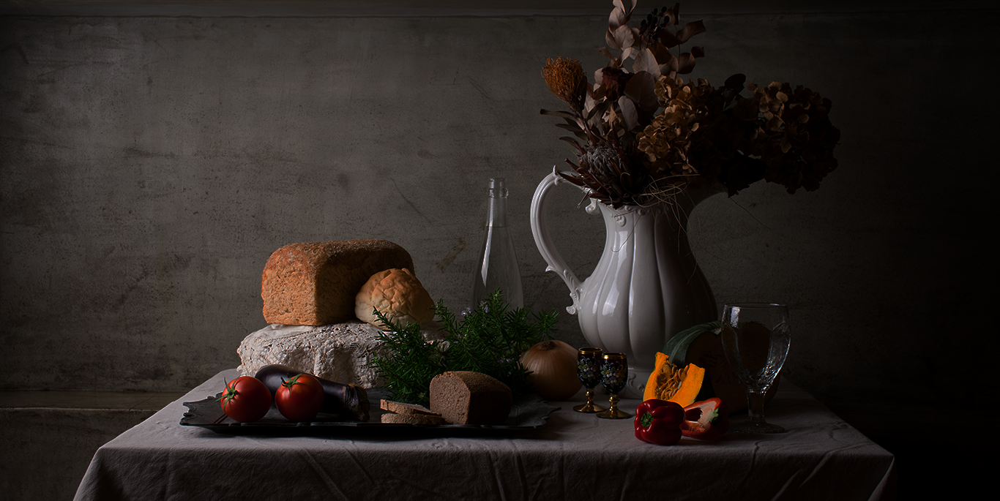
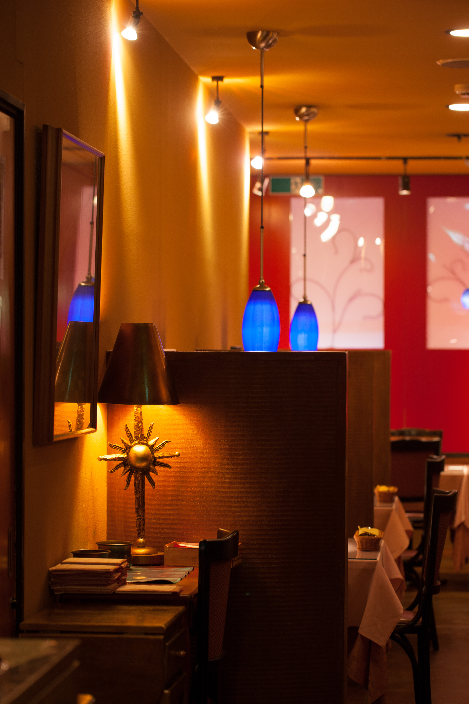

汽笛が響き渡る港町長崎
小さな入口から続く階段を登りきると
ここでしか巡り会えない
食の小宇宙へ誘われる

久保田耕
Ko Kubota
AI、ネットやブロックチェーン等により既存の情報・流通・金融などが
創造的破壊を繰り返しながら霧消して行く。
どうしたら愛され存続可能な店になれるか…凡事徹底
殊更ながら、この時代に一番大事な事と思う。
更に自分達を見失わない為にも…。
MASTER
マスター
久保田太一
Taichi Kubota
〝 仕事 〟=〝 人 〟
「人となり」が「仕事」に映り、「仕事」が「モノ、コト」に宿る。
今まで出逢ってきた生産者、料理人、表現者が全てを物語っていました。
私の料理は〝 人 〟で出来ています。
その〝 仕事 〟を感じて頂ければ幸いです。
CHEFF
シェフ
ELEMENT
食材
美しいと誰もがいうだろう
つくり手たちの哲学が具現化し、生命となって現れる
この息吹に奮い立つ

INFORMATION
店舗案内
HARBIN
Cafe'et Restaurant
営業時間
LUNCH 11:00-15:00/L.O.14:00
DINNER 17:30-22:00/L.O.21:00
定休日
第2 or 第3水曜日
年末年始
095-824-6650
4-13 Yorozuya-Machi , Nagasaki , 850-0852 , Japan
長崎市万屋町4-13